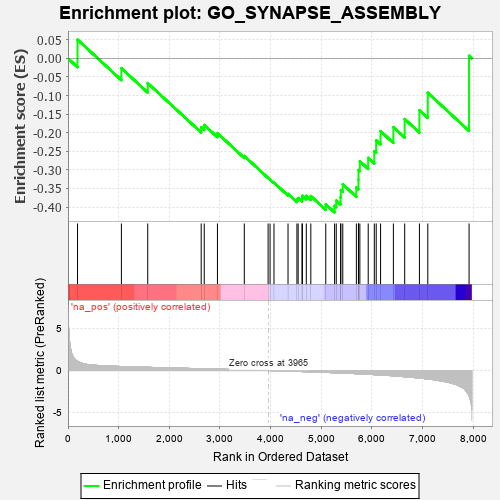
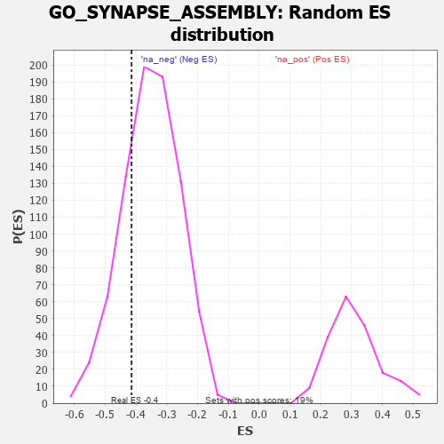

| | | Dataset | 7d |
| Phenotype | NoPhenotypeAvailable |
| Upregulated in class | na_neg |
| GeneSet | GO_SYNAPSE_ASSEMBLY |
| Enrichment Score (ES) | -0.4143418 |
| Normalized Enrichment Score (NES) | -1.176887 |
| Nominal p-value | 0.2503098 |
| FDR q-value | 0.6616338 |
| FWER p-Value | 1.0 |
Table: GSEA Results Summary

Fig 1: Enrichment plot: GO_SYNAPSE_ASSEMBLY
Profile of the Running ES Score & Positions of GeneSet Members on the Rank Ordered List
| PROBE | GENE SYMBOL | GENE_TITLE | RANK IN GENE LIST | RANK METRIC SCORE | RUNNING ES | CORE ENRICHMENT | | 1 | DNER | | | 188 | 1.098 | 0.0503 | No |
| 2 | MEF2C | | | 1054 | 0.473 | -0.0267 | No |
| 3 | FZD1 | | | 1574 | 0.379 | -0.0666 | No |
| 4 | GNPAT | | | 2629 | 0.208 | -0.1853 | No |
| 5 | DSCAM | | | 2689 | 0.200 | -0.1793 | No |
| 6 | RAB17 | | | 2950 | 0.157 | -0.2014 | No |
| 7 | CDK5 | | | 3480 | 0.080 | -0.2626 | No |
| 8 | GPC6 | | | 3950 | 0.002 | -0.3216 | No |
| 9 | VPS35 | | | 3989 | -0.006 | -0.3259 | No |
| 10 | ROBO2 | | | 4066 | -0.018 | -0.3343 | No |
| 11 | SETD5 | | | 4343 | -0.067 | -0.3645 | No |
| 12 | NPTN | | | 4519 | -0.098 | -0.3800 | No |
| 13 | NTRK2 | | | 4543 | -0.104 | -0.3758 | No |
| 14 | DLG5 | | | 4619 | -0.121 | -0.3771 | No |
| 15 | SDK1 | | | 4627 | -0.124 | -0.3697 | No |
| 16 | ARF6 | | | 4704 | -0.140 | -0.3698 | No |
| 17 | PCLO | | | 4793 | -0.156 | -0.3704 | No |
| 18 | DRD2 | | | 5088 | -0.221 | -0.3925 | No |
| 19 | PTEN | | | 5262 | -0.261 | -0.3967 | Yes |
| 20 | MAGI2 | | | 5295 | -0.269 | -0.3826 | Yes |
| 21 | GRIN1 | | | 5381 | -0.291 | -0.3737 | Yes |
| 22 | FZD5 | | | 5386 | -0.292 | -0.3545 | Yes |
| 23 | MDGA1 | | | 5424 | -0.301 | -0.3388 | Yes |
| 24 | LRRC4 | | | 5692 | -0.371 | -0.3474 | Yes |
| 25 | LRFN4 | | | 5733 | -0.387 | -0.3264 | Yes |
| 26 | SLIT1 | | | 5735 | -0.387 | -0.3004 | Yes |
| 27 | TLR2 | | | 5761 | -0.395 | -0.2769 | Yes |
| 28 | LRFN1 | | | 5926 | -0.443 | -0.2676 | Yes |
| 29 | ADD2 | | | 6046 | -0.487 | -0.2498 | Yes |
| 30 | DBNL | | | 6084 | -0.501 | -0.2207 | Yes |
| 31 | GRID2 | | | 6170 | -0.528 | -0.1958 | Yes |
| 32 | PTPRD | | | 6423 | -0.629 | -0.1851 | Yes |
| 33 | PTPRS | | | 6646 | -0.738 | -0.1633 | Yes |
| 34 | GHSR | | | 6937 | -0.894 | -0.1395 | Yes |
| 35 | RYK | | | 7102 | -1.000 | -0.0927 | Yes |
| 36 | ASIC2 | | | 7917 | -2.995 | 0.0068 | Yes |
Table: GSEA details [plain text format]

Fig 2: GO_SYNAPSE_ASSEMBLY: Random ES distribution
Gene set null distribution of ES for GO_SYNAPSE_ASSEMBLY